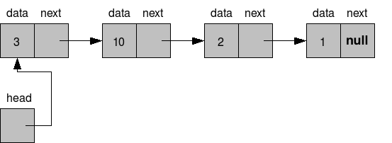

Lists
Objectives
- Provide an overview of lists and
linked lists
- Explore algorithms for managing linked lists
- Benefits of using linked lists
Overview
A list is an ADT that provides the following functionality:
- items are ordered by position (beginning at
position 0)
- items can be referenced by position (beginning
at position 0)
- there can be duplicate items in the list
A List API
- Java java.util.List
API - an ArrayList
is an implementation of this List interface.
- List.java
Example Usage
List list;
list.add(apple)
|
|
list.add(banana)
|
|
list.add(cherries,1)
|
apple
|
cherries
|
banana
|
0
|
1
|
2
|
|
list.add(donut,0)
|
donut
|
apple
|
cherries
|
banana
|
0
|
1
|
2
|
3
|
|
What would the contents of the list appear as after the following
operations?
list.add(apple)
list.add(banana)
list.add(cherry)
list.add(donut)
list.add(eggplant,0)
list.add(fig, 5)
How would the list be modified after the following operations?
list.remove(1)
list.remove(2)
list.remove(banana)
Linked Lists
Designing a bag or a set using an array has advantages:
- arrays are relatively simple to
use.
- it is possible to resize an array
The drawback is that we typically have to create an array that
occupies more space than we need.
A Linked List is an ADT that only allocates space when needed.
Conceptually

A Node
A node represents (1) data, and (2) a reference to the next node.
We will represent a Node as a class:
class Node
{
private Object data;
private Node next;
. . .
}
We will also keep track of the head of the list:
Node head;
This leads to syntax such as
Node current = head;
while (current != null) {
System.out.println(current.data);
current =
current.next;
}
What would this output for the following figure?
Zybooks Note
Zybooks uses pseudocode that is closer to C++ than Java. For the
most part this does not matter, however there are a few syntax
differences between C++ and Java. In Java we use the notation <object>.<data>
or <object>.<method> where a dot '
. ' separates the object and the data or the method. In C++ it
is an arrow ' -> '
Operations:
Add
- Simple
Remove - Not so simple
Implementation of a Linked List
(Not so complete.)
List.java - interface
specifying operations.
LinkedList.java
- implementation of several operations.